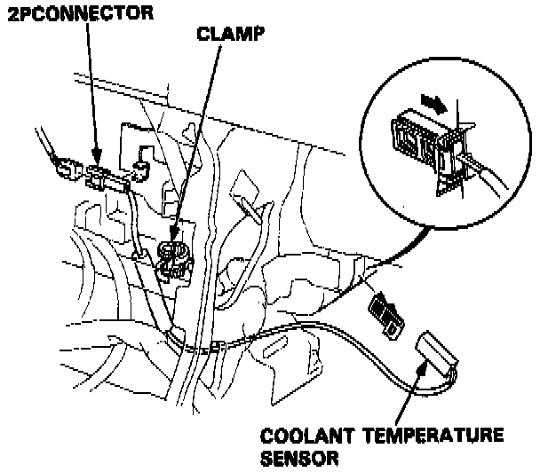

Coolant Temperature Sensor / Switch HVAC: Service and Repair
Removal:
1. Disconnect the 2P connector of the coolant temperature sensor from the heater assembly stay.
2. Remove the heater assembly clamp.
3. Pull out the coolant temperature sensor from the heater assembly as shown.
Installation:
Install the coolant temperature sensor in the reverse order of removal.